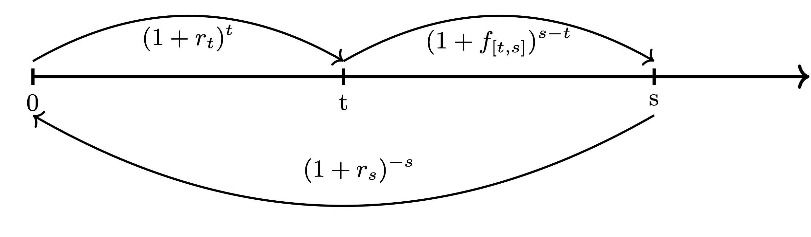
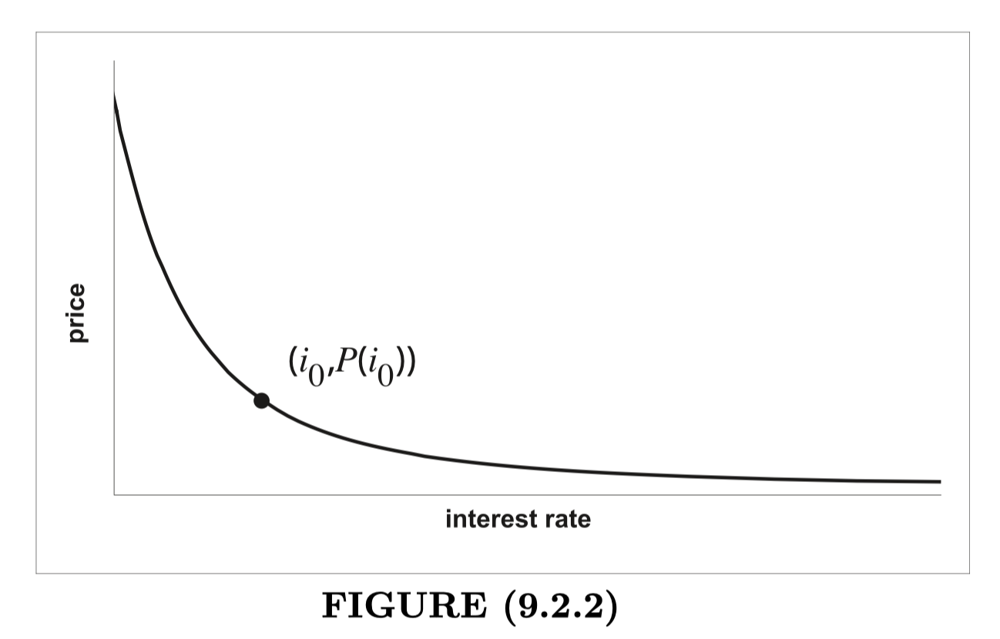

In this chapter, we study the sensitivity of the interest rate.
For \(t>0\), we define the spot rate \(r_t\) to be the annual effective interest rate earned by money invested now (time \(0\)) for a period of \(t\) years:
Equivalently, the spot rate \(r_t\) is the annual effective interest rate such that an investment of \((1 + r_t)^{-t}\) now (time \(0\)) grows to \(1\) at time \(t\).
Spot rates are sometimes called zero-coupon rates.
Why?
If a bond promises only a single payment at a fixed maturity date, then such a bond are sometimes called zero-coupon bond or discount bond.
Without loss of generality, let’s assume the amount of the single payment, i.e., the redemption is \(1\), and the maturity date is at time \(t\) years from now (time \(0\)), then the price of this zero-coupon bond is
where \(r\) is the annual effective coupon rate.
To emphasize the fact that rate \(r\) might depend on the term \(t\), we usually write \(r=r_t\).
In this sense, the zero-coupon rate is indeed the spot rate.
The term structure of interest rates is the relationship between the term \(t\) and \(r_t\).
It is often presents as a plot of \(r_t\) against \(t\), known as the yield curve.
A two-year bond pays annual coupons of \(30\) and matures at \(1,000\). Its price is \(984\). The same corporation sells a one-year \(1,000\) zero-coupon bond for \(975\). Compute the two-year spot rate \(r_2\).
Solution
The time \(0\) value of equation for the two-year bond:
The time \(0\) value of equation for the one-year zero-coupon bond:
Thus, we have
which give \(r_2 = 0.03866\).
If \(s>t\), the annual effective interest rate for the interval \([t, s]\) is \(f_{[t, s]}\), where
We call \(f_{[t, s]}\) the theoretical forward rate.

You are given the following term structure of interest rates:
| Term | 1 | 2 | 3 | 4 |
| Spot Rate | \(3\%\) | \(4\%\) | \(6\%\) | \(7\%\) |
(a) Compute the 2-year forward rate, one year from now.
(b) Compute the 1-year forward rate, three years from now.
(a) Want: \(f_{[1,3]}\).
so \(f_{[1,3]} = 7.53\%\).
(b) Want: \(f_{[3,4]}\).
so \(f_{[3,4]} = 10.06\%\).
Consider a set of future cash-flows \(\{C_t: t\ge 0\}\), e.g., coupons and the redemption payment corresponding to a bond.
If the spot rate is equal to \(i\), this set of cash-flows has the present value (or price)
If one draws a graph of the price \(P\) as a function of the interest rate, one gets a price curve which is typically convex, decreasing and has a horizontal asymptote at zero as \(i\to \infty\).

Note that \(P\) is infinitely differentiable; as such it admits a Taylor expansion.
So, we have the following second order Taylor polynomial approximation for \(P\) around any \(i_0\):
for \(i\) close to \(i_0\).
The expressions for the derivatives are
If we are satisfied with a coarser approximation, we can neglect the second-order term in the Taylor polynomial and write
Then, for \(i\) close to \(i_0\).
The expression above represents the fractional price change, i.e., the relative price change. That said, for every \(100\) basis point increase in the interest rate (e.g. from \(0.05\) to \(0.06\)), the approximate relative price change is \(\displaystyle \frac{P'(i_0)}{P(i_0)}\) percent.
For any \(i>-1\), we define the modified duration (of the price \(P\)) by
Then,
The larger the modified duration, the more sensitive the price is to interest rate changes.
For any \(i>-1\), we define the modified duration \(D(i, m)\) (of the price \(P\)) by
where \(\displaystyle i^{(m)} = m[(1 + i)^{1/m} - 1]\).
Rearranging the terms and passing the limit (\(m\to \infty\)), we have
which is called the Macaulay duration.
Note that the Macaulay duration can be re-written as
and thus is the weighted average of payment times, where the weights are the portion of the total price attributable to that cash flow.
Suppose payments of \(2000\), \(4000\), and \(10000\) are to be made at times 1, 2, and 4, respectively. Assume, an annual yield of \(25\%\).
Find the Macaulay duration.
Solution
The duration is given by
An \(N\) year zero-coupon bond is purchased to provide an annual effective yield \(i\). Find the Macaulay duration and the modified duration.
Solution
Find the Macaulay duration of a ten-year, \(1,000\) face value, \(8\%\) annual coupon par-value bond. Assume the effective annual interest rate is \(7\%\).
Solution
The weighted average of payment times is
Using the calculator, we have
thus, the Macaulay duration is \(7.3466\) years.
Important Fact 9.2.25
The Macaulay duration of a par-value bond bought for its redemption amount, with \(m\) coupons per year and a fixed n-year term, is \(\ddot{a}_{\overline{n}|i}^{(m)}\) where \(i\) is the yield rate to the purchaser. So, the duration increases with \(n\) and decreases if \(i\) or \(m\) increase.
Thus, the modified duration in this case is
Recall the second-order Taylor approximation for the relative change in the prince \(P\) as a function of the interest rate \(i\):
Guided by the above approximation, we define the modified convexity by
Now, the above approximation reads as
Find the modified convexity of a 20 year zero-coupon bond assuming the interest rate is \(7\%\) effective.
Solution
Similarly to the duration discussion, we define
which is called the Macaulay convexity, and again it is a weighted average.
Arturo is the recipient of an annuity that will pay the following: (i) \(100,000\) today; (ii) \(200,000\) at the end of two years; and (iii) \(300,000\) at the end of four years.
Calculate the Macaulay convexity of Arturo’s annuity at annual interest rate \(4\%\).
Solution
Note: We still assume that the yield curve is flat and that its shifts are parallel…
A set of cashflows consists of:
Then, the surplus valued at interest rate \(i\) is defined as
A non-negative surplus means that the time 0 value of the assets is greater than the time 0 value of the liabilities; you are ahead by an amount \(S(i)\). If you have a negative surplus, you are behind and this may have significant consequences.
Goal: To structure assets and liabilities in such a way that they are protected against interest rates changes.
Denote the current interest rate by \(i_0\). Assume that
Then \(S(i_0 + h) \ge 0\) for \(h\) sufficiently small.
Moreover, the assumption (Cond) is equivalent to the following:
Alan and Peabody Insurance is obligated to make a payment of \(120,000\) in exactly four years. In order to provide for this obligation, their financial officer decides to purchase a combination of two-year zero-coupon bonds and five-year zero-coupon bonds. Each of these is sold to yield an annual effective yield of \(4.5\%\).
How much of each type of bond should be purchased so that, together with the \(120,000\) outflow in four years, the zero-coupon bonds constitute a portfolio satisfying Redington immunization at an annual effective interest rate of \(4.5\%\)?
Let us denote by \(X\) the amount invested in two-year bonds, and by \(Y\) the amount invested in five-year bonds. Then we first should have
Next, we need the Macaulay durations of the assets to equal to \(4\), the Macaulay duration of the single liability at time 4:
which gives \(Y = 2X\).
Therefore, we obtain \(X = 33,542.45\) and \(Y = 67,084.91\).
Now, let us compute the Macaulay convexity of the portfolio of assets and see whether it exceeds \(4^2 = 16\), which is the Macaulay convexity of the single liability to be paid at time 4:
so the portfolio satisfies the Redington immunization.
Question: How does this immunization help? Page 486.
While the Redington immunization prevents loss for small changes in the interest rate, under full immunization no change in the interest rate will cause a decrease in price. If the following are true:
Then \(S(\delta)>0\) for any \(\delta \neq \delta_0\).
Note: For the reason why these two conditions are enough, read the Optional technical note on Page 490-491.
A portfolio consisting of a single outflow of amount \(L\) at time \(T\) and inflows \(U\) at time \(T - u\) and \(W\) at time \(T + w\) is fully immunized. If the system of equations
is satisfied, the portfolio will never force default.
Moreover, if \(i\) is the equivalent annual rate, then the system of equations become
An investor has a single liability of \(1,000\) due in 15 years’ time. The yield on zero coupon bonds of any term is currently \(4\%\) per annum, and the investor possesses cash equal to the present value of his liability. He wishes to invest in 10-year and 20-year zero-coupon bonds in such a way that he will make a profit on any immediate change in the force of interest. How much of each security should he buy?
Solution
Let \(X\) and \(Y\) be the amount of 10-year and 20-year zero-coupon bonds invested, then
So we have \(X = 410.96\) and \(Y = 608.32\).
Read: A Basic Course in the Theory of Interest and Derivatives Markets by Marchel B. Finan in Page 540-541
Find and solve Sample Questions related to absolute matching.